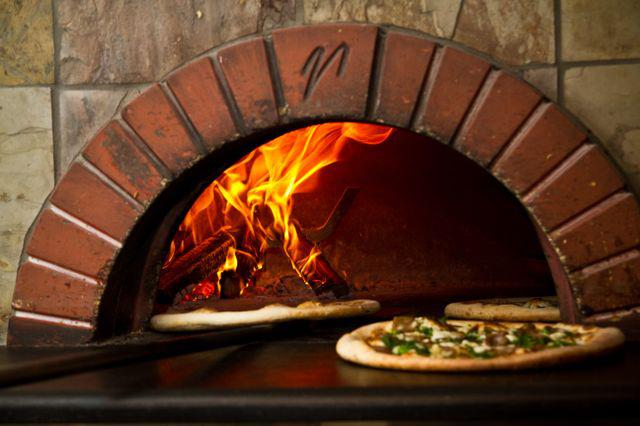

ABOUT THE OWNER
Donatello Scarsi first developed culinary skills producing and selling cheese. It was in Naples, however the birthplace of pizza just an hour away from his hometown where Scarsi went to study the art and craft of the pizzaiolo. After learning all things Neapolitan, among some of the best pizza makers in the world, Scarsi came to the United States and opened several successful pizzerias before settling in Benton Arkansas.
All of the pizzas from Saline River Pizza are handmade, specialized to our customer's order, and then cooked in our brick oven.
Donatello would like to thank everyone for visiting the new website and ordering pizza through our new ordering system.